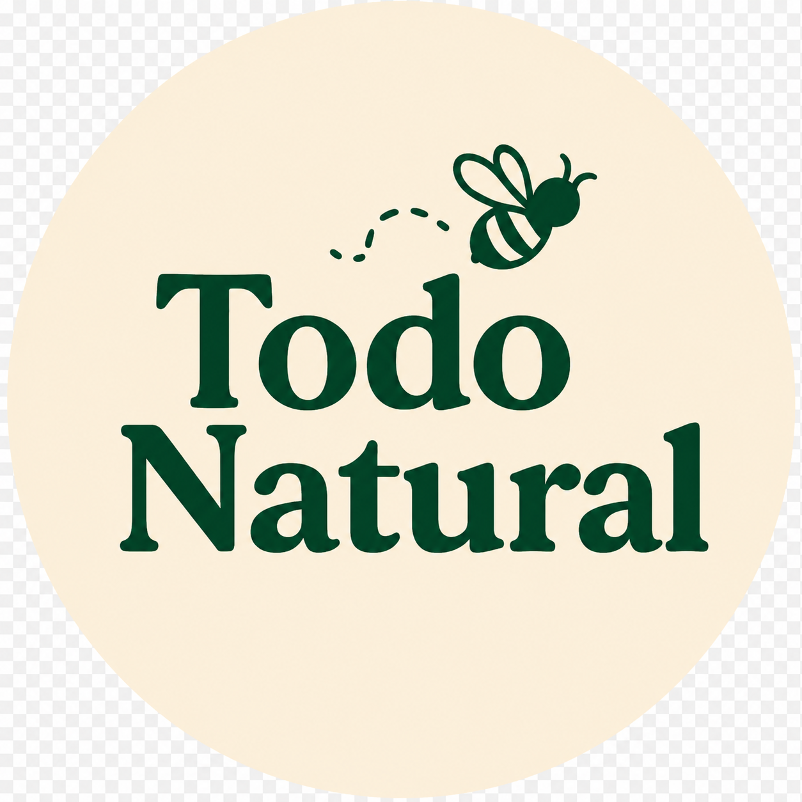
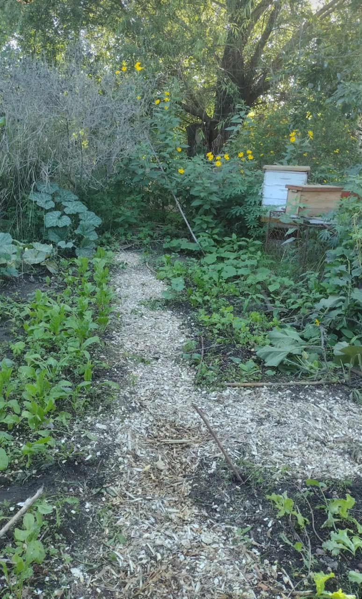

Planificación de los cultivos
Las especies se seleccionan teniendo en cuenta la época del año, las condiciones ambientales y las necesidades particulares de cada cultivo.

En Todo Natural acompañamos cada etapa productiva con observación, planificación y conocimientos de ingeniería agronómica.

Las especies se seleccionan teniendo en cuenta la época del año, las condiciones ambientales y las necesidades particulares de cada cultivo.
Durante el crecimiento observamos el estado de las plantas, el suelo y la disponibilidad de agua para acompañar adecuadamente su desarrollo.
Las hortalizas se cosechan cuando alcanzan el momento adecuado de desarrollo, buscando conservar su frescura y calidad.
La producción de miel depende del trabajo de las abejas, de las floraciones disponibles y de las condiciones ambientales de cada temporada.
La actividad apícola requiere acompañar el desarrollo de las colmenas y respetar sus necesidades a lo largo del año.